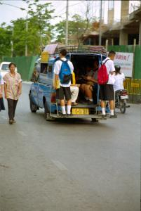

|
Mardi 22 mai
Ce matin, on a mal aux fesses! Merci la mob et son siège tout dur! Bus pour
Chiang Maï, climatisé! A nouveau on traverse de jolies montagnes vertes. Sur
la route, de nombreuses "maisons des esprits". Ce sont en fait des maisonnettes
genre grandes cabanes à oiseaux perchées sur un pied à environ 1m40 du sol (pas
1m50, plutôt ENVIRON 1m40). Avant de débuter toute nouvelle construction -une
maison, un hangar, une étable, etc- on construit une maison aux esprits afin
que les esprits qui habitent le lieu puissent s'y réfugier. Sinon, ne sachant
où aller et étant dérangés, ils hanteront la maison. Il ne faut pas oublier
non plus de l'embellir à chaque fois qu'on embellit sa maison! C'est bien matérialiste
le bouddhisme finalement!
A Chiang Maï, on retourne au marché de jour qui nous avait tant plu. On y retrouve
les vendeurs de brochettes (d'on ne sait quoi d'ailleurs), ceux de scarabbées,
cafards, vers et autres amuses-gueules(!), ceux des plats cuisinés que ni l'aspect,
ni la couleur, ni l'odeur ne nous permettent d'identifier. La plupart du temps,
ça sent très bon. Les Thaïs prennent le temps de vivre, les mamies s'assoient
sur le trottoir, leurs courses autour d'elles et rient de bon coeur en sirotant
on ne sait quoi dans un sachet en plastique à la paille. Bref, c'est la vie
du marché!
Mercredi 23 mai
C'est encore l'anniversaire de Lionel! Il le fête tous les mois maintenant!
Alors, on loue une mob, on met les casques deux fois trop grands pour nous et
complètement défoncés, et on s'incorpore à la circulation. Bangkok et Chiang
Maï sont les deux seules villes où le port du casque est obligatoire. Dans cette
dernière, c'est tout récent et d'ailleurs on dirait que les gens n'ont pas bien
saisi le sens des mots "casque obligatoire"! Un sur cinq en porte un au maximum.
Les policiers, présents toujours aux mêmes carrefours -pour cela, la Thaïlande
c'est comme la France- s'en donnent à coeur joie... Enfin, quand ils arrivent
à chopper les gens car ceux-ci font demi-tour sur place en les voyant quitte
à repartir à contresens dans les grandes artères à sens unique ou encore ralentissent,
font semblant de s'arrêter... et repartent sans se retourner dès qu'ils ont
dépassé le policier! C'est un peu le jeu du chat et de la souris et personne
ne s'énerve jamais, ceux qui passent entre les mailles du filet (il y a tout
de même bien 6 ou 7 policiers à chaque fois) ont gagné pour cette fois et c'est
tout.
Nous partons donc pour Mae Sa, au nord de Chiang Maï. D'abord, visite d'une
ferme d'orchidées. La Thaïlande est tout de même le pays des orchidées, on ne
pouvait pas rater cela. C'est superbe: des centaines d'orchidées sont pendues
partout à hauteur des yeux! De toutes les sortes, de toutes les tailles, de
tous âges, de toutes les couleurs, de toutes les formes, de tous les parfums!
Puis nous partons à la ferme aux éléphants, c'est rigolo, il y en a de tout
jeunes. Dont un de 6 ou 9 mois qui sait déjà faire le poirier et un de 3 mois
qui marche dans les pattes de sa mère. La pauvre a bien du mal à obéir à son
cornac qui lui demande d'avancer! Les gosses, ça se fourre toujours dans les
pattes...
Après un petit détour par un temple (ce qui n'arrange pas notre overdose),
on se dirige vers le village de Borsang, village des "artisans". En fait, on
ne trouvera que des "artisans de masse". Les meubles en teck sont sculptés de
façon artisanale mais dans un immense hangar et vendus façon conforama. On se
perd dans les allées... Les ombrelles, c'est pareil. Ca reste cependant très
intéressant de voir leur fabrication. Et nous finissons par l'hypermarché du
bijoux, aux normes ISO 9002 comme c'est écrit en énormes lettres sur le fronton!
C'est un hypermarché, masi ça reste hyper classe, petites hôtesses en jupette
fort apprêtées, moquette où on s'enfonce... On fait tâche avec nos shorts usés
et nos t-shirts sales de fin de journée. Ils ont d'ailleurs bien compris que
l'on n'était pas de gros clients et un charmant jeune homme nous a vite emmenés
visiter la fabrique-expo des bijoux et... raccompagnés directement jusqu'à la
porte. De façon tout à fait charmante. Au retour, on s'est arrêté... chez Auchan!
Ici, il y a Carrefour et Auchan! Bonheur, on a acheté 2 baguettes, du paté,
et du jambon cru. On en salivait. Malheureusement il n'y avait ni bretzels ni
chocolat en plaque.
C'est dans le bus pour Sukhotaï, pour le ptit déj, qu'on s'est aperçu que le
super jambon était en fait... du lard à cuire! Cruelle déception. Cinq heures
de route plus tard, on débarque affamés à Sukhotaï, une ancienne capitale du
Siam.
Suite du voyage : Sukhotaï
|

Thailande
Chang Mai
|

Thailande
Chang Mai
|
Thailande
Chang Mai
|
|
|